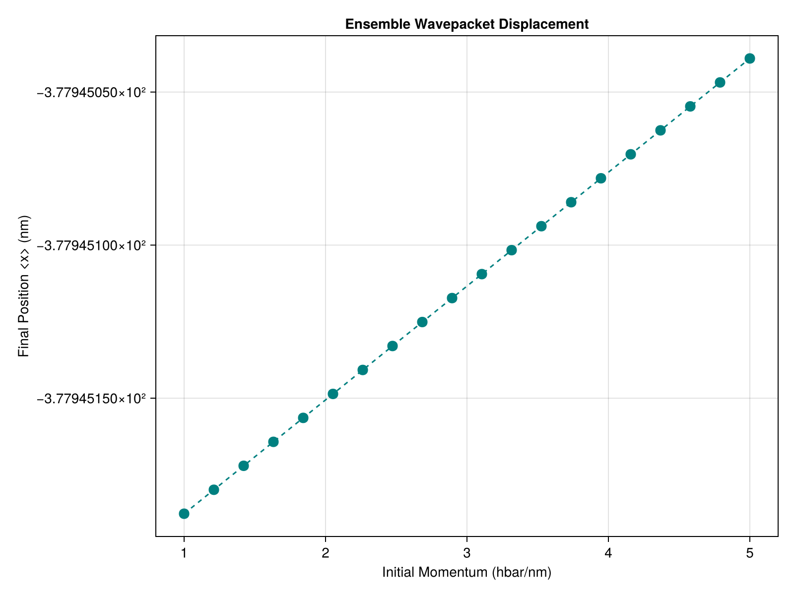

Distributed Ensemble
For massive scale simulations (like running on a supercomputing cluster), standard multi-threading isn't enough. SchroedingerEquation.jl works seamlessly with Julia's Distributed standard library, allowing you to run ensemble simulations across multiple processes and even multiple machines over a network.
Adding Workers
We begin by adding worker processes.
using Distributed
# 1. Add Workers (e.g., 4 processes)
if nprocs() == 1
addprocs(4)
endLoading Dependencies
Because the workers are entirely separate memory processes, we must load our dependencies @everywhere.
# 2. Load Package on all workers
@everywhere begin
using Pkg
Pkg.activate(".")
using SchroedingerEquation
using Unitful
using LinearAlgebra
end
println("Running distributed ensemble on $(nprocs()) processes...")The Distributed Map
We want to calculate the final mean displacement of a wavepacket as a function of its initial momentum.
We use the incredibly powerful pmap (Parallel Map) function. pmap automatically load-balances the workload, sending each iteration of the loop to whatever worker process is currently free!
# 3. Setup Simulation Parameters
basis = RealSpaceGrid1D(-50.0u"nm", 50.0u"nm", 1000)
potential = CustomPotential(x -> 0.0) # Free space
p0_list = range(1.0, 5.0, length=20)u"hbar/nm"
# 4. Distributed Loop
results = pmap(p0_list) do p0
x0 = -20.0u"nm"
sigma = 2.0u"nm"
psi_vals = [exp(-(x - strip_units(x0))^2 / (2 * strip_units(sigma)^2)) * exp(im * strip_units(p0) * x) for x in basis.x]
psi0 = Wavefunction1D(ComplexF64.(psi_vals), basis)
normalize!(psi0)
t_total = 50.0u"fs"
dt = 0.1u"fs"
# Run simulation
history = propagate_ssfm(psi0, potential, t_total, dt; keep_history=true)
# Calculate final mean position <x>
final_wf = history[end]
mean_x = expectation_value(final_wf, x -> x)
return mean_x
endVisualization
# 5. Process and Visualize
println("All workers finished. Generating ensemble plot...")
using CairoMakie
fig = Figure(size=(800, 600))
ax = Axis(fig[1, 1], title="Ensemble Wavepacket Displacement",
xlabel="Initial Momentum (hbar/nm)", ylabel="Final Position <x> (nm)")
scatter!(ax, ustrip.(p0_list), results, color=:teal, markersize=15)
lines!(ax, ustrip.(p0_list), results, color=:teal, linestyle=:dash)
save("examples/results/08_distributed_ensemble.png", fig)
println("Ensemble complete. Results saved to examples/results/08_distributed_ensemble.png")Console Output:
Running distributed ensemble on 5 processes...
All workers finished. Generating ensemble plot...
Ensemble complete. Results saved to examples/results/08_distributed_ensemble.pngResulting Plot:
